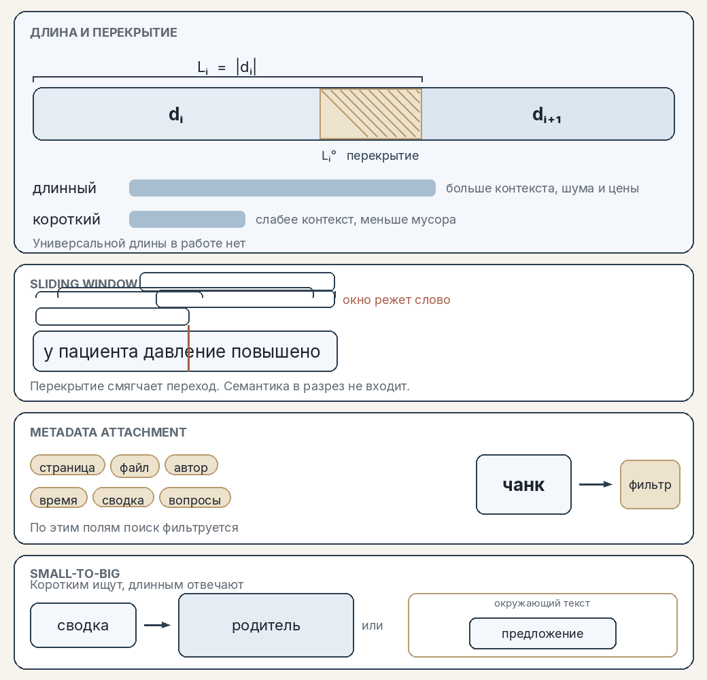

Лекция 821
Как резать чанк
\(L_i = |d_i|\) — длина. \(L_i^o = |d_i \cap d_{i+1}|\) — перекрытие.
Длинный чанк берёт больше контекста, тащит больше шума и дороже обрабатывается. Короткий хуже держит контекст и несёт меньше мусора. Универсальной длины в работе нет.
Sliding Window. Перекрытие смягчает переход. Плохо контролируется размер, окно режет слово или предложение, семантика в разрез не входит.
Metadata Attachment. Страница, файл, автор, время, сводка или связанные вопросы. По ним поиск фильтруется.
Small-to-Big. Коротким чанком ищут, длинным отвечают. Либо сводка ведёт к родительскому чанку, либо предложение берётся с окружающим текстом.
